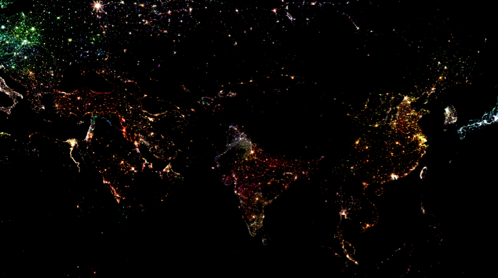
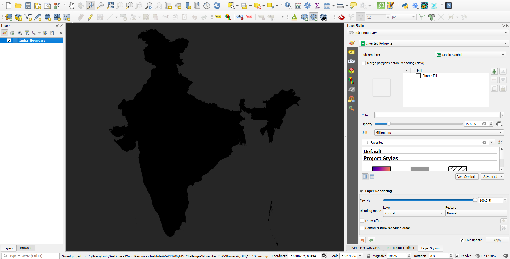
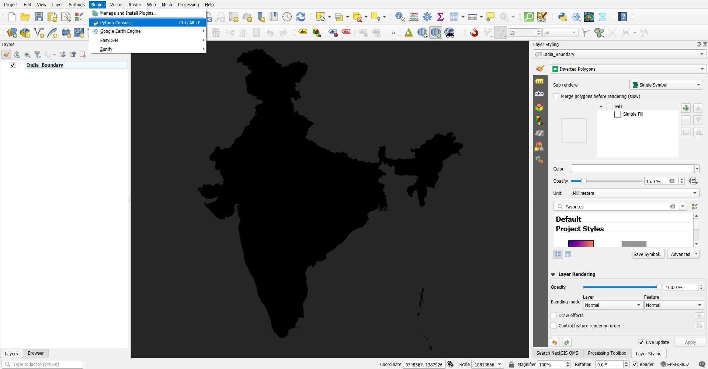
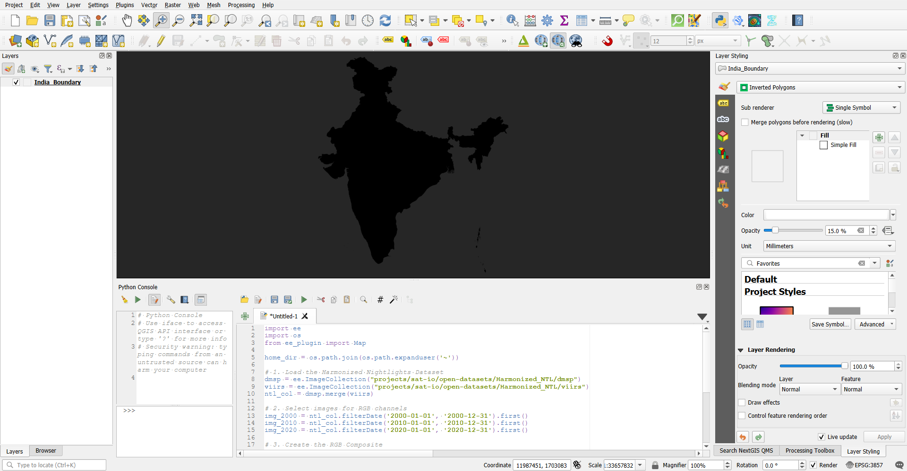
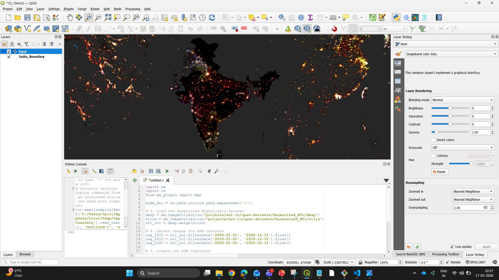
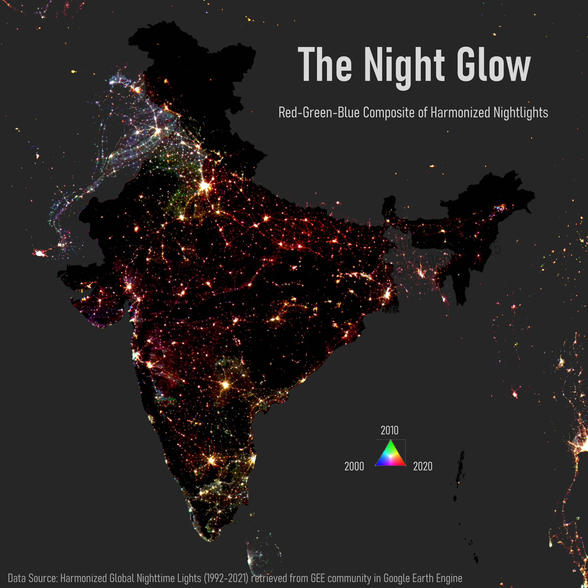

An RGB image of nighlights showing parts of Europe, the Gulf Region, Africa, and Asia.
A semi-automated workflow to map RGB image of nightlights from GEE in QGIS
Long before I even ventured into the world of geoinformatics, I stumbled across one image on the web claiming to show India during Diwali. It wasn't until my masters, when I finally encountered satellite-derived nighlights, that I realised what I had actually been looking at. That one viral image has still stayed with me as a reminder of how important it is to question the information we consume.
Nightlight datasets are widely considered among the most important tools for correlating urban sprawl with economy. While they come with limitations - a topic for another day - they offer incredible insights when processed correctly. In this blog, I will focus on leveraging the power of Google Earth Engine, Python and QGIS to map an a multi-temporal RGB image of nighlights for India.
Nightlights Data
The nightlight (NTL) data from the Defense Meteorological Satellite Program (DMSP) - Operational Linescan System (OLS) and Visible Infrared Imaging Radiometer Suite (VIIRS) have long been our primary sources for measuring anthropological activities at various scales. For years, DMSP served as the main source of our nighttime footprint, but its spatial and radiometric resolution made it difficult to use for detailed analysis. VIIRS eventually solved many of these issues reducing the over-glow effects and offering better spatial clarity at local scale.
Because these two sensors capture light differently and cover different time-periods, it is important to have a normalized nighlight dataset if we want to look at long-term trends. This has been enabled by Harmonized Global Night Time Lights dataset, which provides a continuous record from 1992 to 2021. A major advantage is that this dataset is available through the GEE community catalog which means you can call it into your GEE script just like any standard dataset from the official GEE catalog.
GEE plugin in QGIS
While GEE is powerful on its own, sometimes you need support of local GIS tool which provides specialized cartography. GEE plugin for QGIS provides this functionality without having to first process and extract data from GEE and then importing in QGIS to make maps.
What is the GEE plugin?
Created by the community (originally by Gennadii Donchyts), this plugin lets you leverage the cloud-based power of Earth Engine within your local desktop environment of QGIS. It allows you to run GEE python API directly within QGIS, bringing massive sized satellite data into your QGIS map canvas without having to download a single file.
One cautionary note - it is best practice to design your GEE scripts so that all the heavy processing happens in the cloud, bringing only the final result into QGIS. This is because the imported layer acts as an RGB visualization rather than a raw data layer; you won't be able to perform any pixel-based analysis on it as you would with a raw, multi-band GeoTIFF.
How to use the plugin in QGIS
- Installation: You can find it by going to
Plugins -> Manage and Install Pluginsand searching for Google Earth Engine. - Authentication: After installation, follow on-screen instructions to authenticate your GEE account.
- Execution: Now you can open QGIS python console and paste your GEE script. Here, you would need to use python syntax to write your GEE commands.
Now we are ready to import and process nighlights and then export it as a high resolution map!
Processing Nighlights
Setting the Canvas
Before I start python scripting in QGIS, I set the basemap to dark-mode aesthetics as nightlights naturally pop best against a dark background. I import the national boundary of India and visualize it using Inverted Polygon Symbology to create a focused effect making India stand out compared to the neighbouring countries.

A screenshot of the dark-themed basemap
Python scripting

Screenshot showing where to enable Python Console from
Now I open the python console by going to Plugins > Python Console to start writing the script that does the following:
- Importing essential libraries:
-
os: Manages operating system tasks like defining the working folder.-
ee: The earth engine library that allows you to access the collections from Google Earth Engine Catalog and GEE community catalog datasets.-
from ee_plugin import Map: This allows us to take the result from GEE usingMap.addLayer()and paint it as an RGB image onto the QGIS map canvas. - Creating RGB composite:
By assigning different years to the Red, Green and Blue channels, we can visualize the decades of change in a single image. I have used
ee.Image.cat()to stack three specific years:- Red: 2020
- Green: 2010
- Blue: 2000
I chose Red for 2020 because it helps make the latest developments most prominent.
- Setting visualization parameters and adding to QGIS canvas:
I have used
Map.addLayer()to bring the final image to the QGIS canvas after setting up the specific visualization parameters.
Find the full script that I used to incoporate the GEE workflow in QGIS below:
import ee
import os
from ee_plugin import Map
home_dir = os.path.join(os.path.expanduser('~'))
# 1. Load the Harmonized Nightlights Dataset
dmsp = ee.ImageCollection("projects/sat-io/open-datasets/Harmonized_NTL/dmsp")
viirs = ee.ImageCollection("projects/sat-io/open-datasets/Harmonized_NTL/viirs")
ntl_col = dmsp.merge(viirs)
# 2. Select images for RGB channels
img_2000 = ntl_col.filterDate('2000-01-01', '2000-12-31').first()
img_2010 = ntl_col.filterDate('2010-01-01', '2010-12-31').first()
img_2020 = ntl_col.filterDate('2020-01-01', '2020-12-31').first()
# 3. Create the RGB Composite
# Order: Red (2020), Green (2010), Blue (2000)
rgb_composite = ee.Image.cat([img_2020, img_2010, img_2000])
# 4. Define Visualization Parameters
composite_vis_params = {
'min': 7,
'max': 55,
'gamma': 1.5
}
# 5. Add the result to the QGIS Canvas
Map.addLayer(rgb_composite, composite_vis_params, 'layer')

Screenshot showing code snippet pasted in python console in QGIS
Final Outcome
Once I run the script through the Python console, the new nightlight layer appears in the map canvas. By default, QGIS adds new layers to the top, so I manually shift the nightlight layer below my national boundary layer. This reordering ensures the lights are perfectly framed within the borders of India.

Screenshot showing layer added above the national boundary after running the code
We can move into the Map layout view after ensuring the layers are in the correct order. Here, I have added the remaining map elements like a legend, scale bar, and title. The finished product looks like this:

Final map after adding Title, Subtitle, Data Source and RGB triangle as legend
Conclusion
This workflow is an example of how we can integrate different GIS tools to increase efficiency. By combining the raw processing power of Google Earth Engine with the design flexibility of QGIS, we get the best of both worlds to create maps that are both accurate and visually compelling.
Thank you for reading through this post. Please feel free to share any feedback or comments with me on this piece by emailing at jyoti9412nitk@gmail.com.